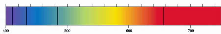

Draw an (approximate) picture of the spectrum that might be recorded for comet Lulin.
[HERE is an emission spectra tool you can use]
�This is a absorption spectra data: 
Use the emission spectra tool to identify the element and explain why you can use emission spectra to analyze absorption spectra data.
What is the difference between an emission and an absorption spectrum in terms of how they are produced?
If you meet a friend wearing a yellow sweater, what process(es) is/are occurring so that you see the sweater as being yellow? For example: is the sweater emitting yellow light (like sodium vapor lamps)? Or is is absorbing light, so that we only see what is reflected? If so what wavelengths of light are being absorbed?
|